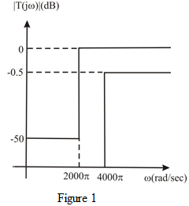

The high-pass filter have passband defined by and stopband defined by .
The maximum attenuation allowed in the passband is,
The minimum attenuation allowed in the stopband is .
The passband is defined by . Hence, the pass band edge is,
And the stop band is defined by . Hence, the stop band edge is,
The sketch of transmission specifications for a high-pass filter is shown in Figure 1.
